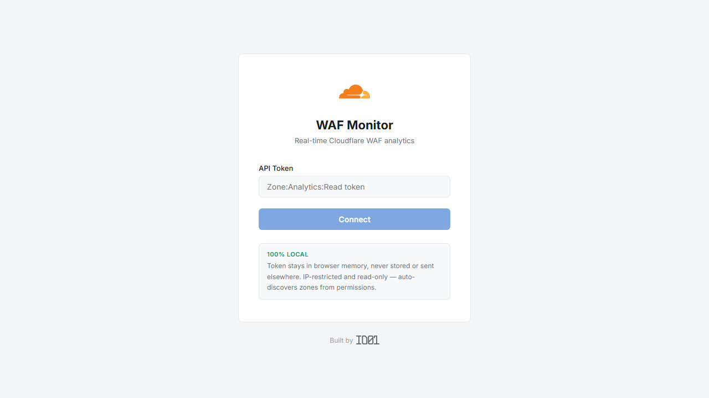
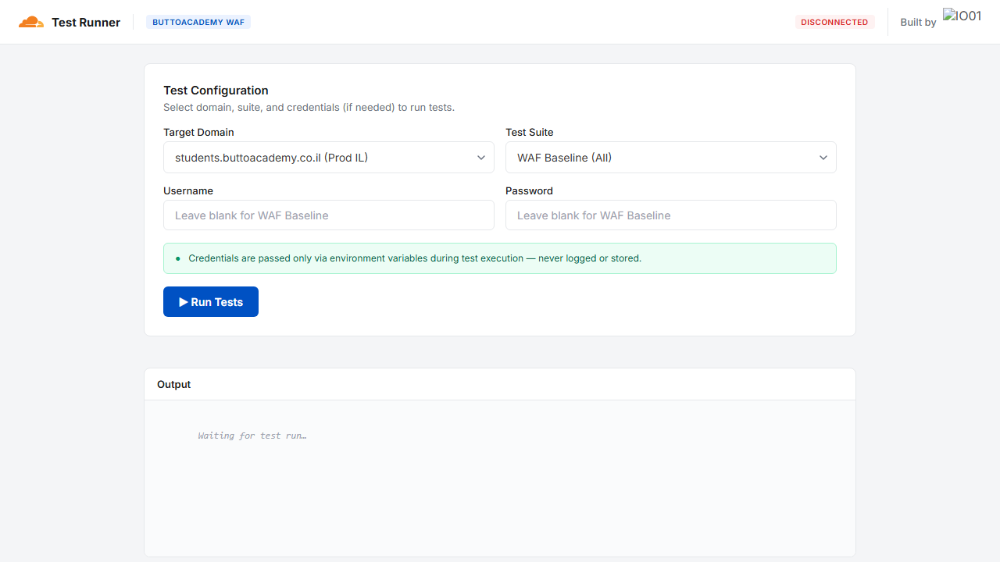

← Back to home
WordPress Security
Cloudflare WAF implementation and automated security testing for WordPress sites. Paid client work under the mentorship of IO01.
WAF Monitor — 5-Rule Defense System
Progressive rules that escalate from permissive to restrictive, ensuring legitimate traffic passes while blocking threats.
- Allow good bots — verified search engine crawlers and monitoring services pass through unconditionally
- Challenge crawlers — unverified bots receive managed challenges to prove legitimacy
- Geo & provider filter — restrict traffic by geography and hosting/cloud provider IP ranges
- VPN & login protection — additional challenges for VPN traffic and wp-admin access
- Block hostile traffic — hard block on known-malicious IPs, TOR exit nodes, and attack patterns

WAF Monitor — real-time Cloudflare WAF analytics
Strategy
1
Challenge
Start with managed challenges, not hard blocks
→
2
Monitor
Observe traffic patterns and identify false positives
→
3
Escalate
Tighten rules based on observed data
Playwright Test Runner
Automated E2E testing suite that validates WAF rule effectiveness.
- Rule validation — tests each WAF rule to confirm expected allow/block/challenge behavior
- False positive detection — verifies legitimate user flows are not interrupted
- Regression testing — runs after rule changes to catch unintended side effects
- Multi-browser coverage — tests across Chromium, Firefox, and WebKit

Playwright Test Runner — automated WAF rule validation
Additional Work
- Video content protection — strategies to prevent unauthorized downloading and hotlinking of video assets
- Bilingual documentation — vulnerability reports and security guides in both English and Hebrew
IO01 Context
This project was done as paid client work through IO01, a startup founded by Nimrod Luria. IO01 provides mentorship-driven tech services, pairing junior developers with real client projects under experienced guidance.
The mentorship focused on security engineering practices, Cloudflare infrastructure, and professional client delivery.